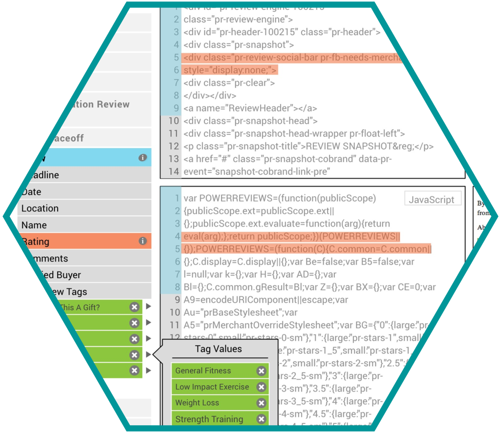
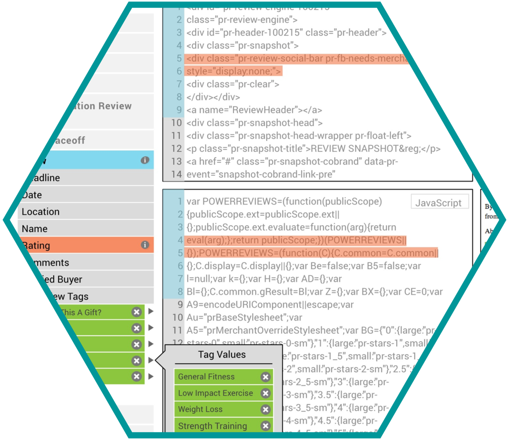

Project1
 



The first research was talking to instructors and other classmates about their interactions with APIs. After looking through several resources and learning more about the details of an API call, we started looking into various types of online code editors.
Our design is heavily influenced by jsfiddle. As a servie, it has wide usage across skill levels and developer communities. We needed a way of displaying all of the file types at once, and preferably a visual display of the results. jsfiddle does this quite nicely, managing to pack a lot of information into a compact screen.
Subsiquent user testing of paper prototypes validated this decision. Most of the iteration that we did was on the details of the layout of the screen; the universal response we got to prototypes at all fidelities was "wow! This is really great!" and "I would use the crap out of an API that had an interface like this".